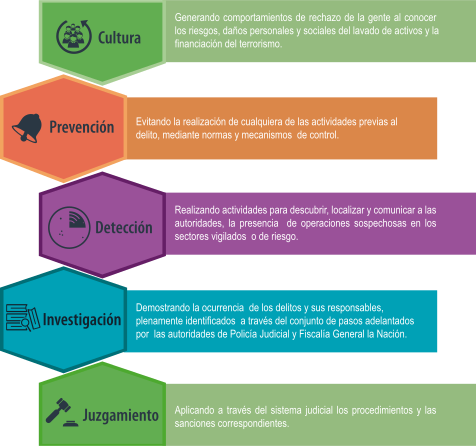

El Estado colombiano ha establecido una política permanente para la lucha contra el LA/FT, a través de cinco frentes de acción como se observa en el siguiente esquema.
Además de las acciones desarrolladas por el Estado en cada uno de estos frentes, se cuenta con el apoyo de otras entidades, organismos nacionales e internacionales.
A continuación se presenta un resumen de las principales entidades a nivel nacional e internacional, encargadas de prevenir, controlar y penalizar las actividades de Lavado de activos y Financiación del terrorismo.
Haga clic sobre cada elemento para ver los datos asociados.
En Colombia funcionan entidades adscritas a los Ministerios, tales como:
Haga clic sobre cada elemento para ver los datos asociados.

La unidad de inteligencia financiera de Colombia es la UIAF (Unidad de información y análisis financiero).
Creada mediante la ley 526 de 1999, como una unidad administrativa especial con personería jurídica, autonomía administrativa, patrimonio independiente y regímenes especiales en materia de administración de personal, nomenclatura, clasificación, salarios y prestaciones, de carácter técnico, adscrita al ministerio de hacienda y crédito público.
Son funciones de la UIAF*: